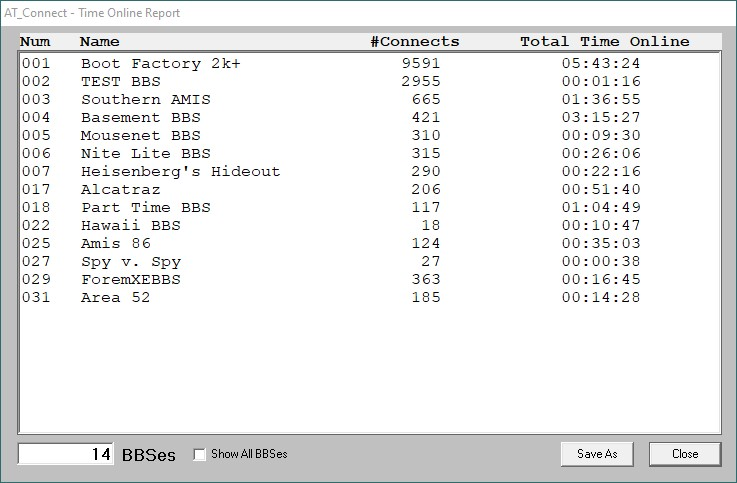

Time Online Report

The Time Online report is a report showing the time online of the various BBSes in the AT_Connect BBS file. The 'online timer' must be enabled in the configuration in order to collect the time online and display it in this report.
- Show All BBSes - checking this box allows all BBSes in your BBS File to show up in the report. When it is unchecked, only the BBSes with actual connect time will show up.
- Save As - allows the saving of this report into the System Folder after prompting for a filename.
Programming Note - The same form is used for both the 'System Log' and the 'Time Online report'. The data it displays and the functions that are allowed are determined by a system variable called "TPSreports".